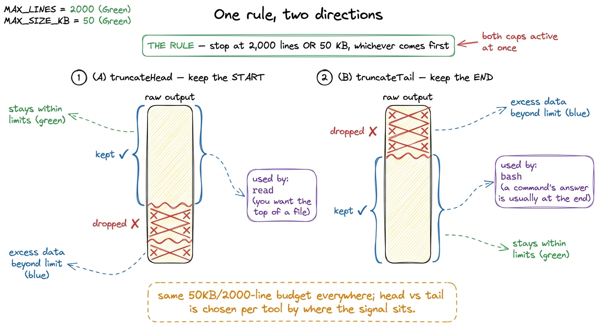
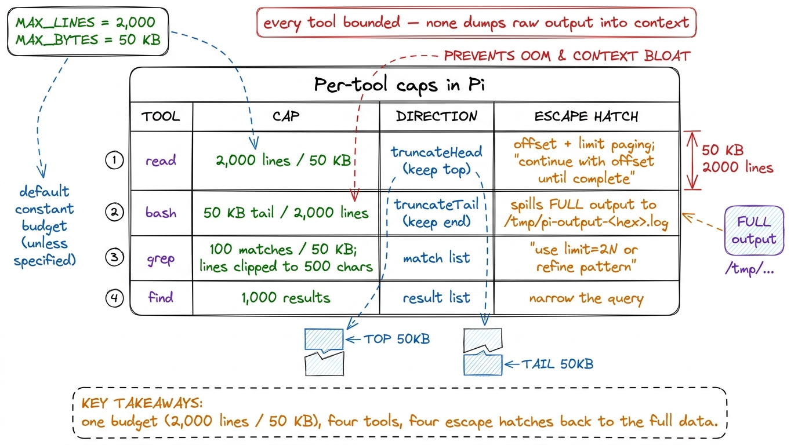
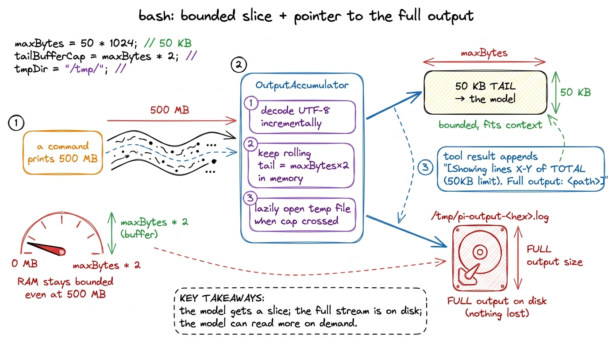
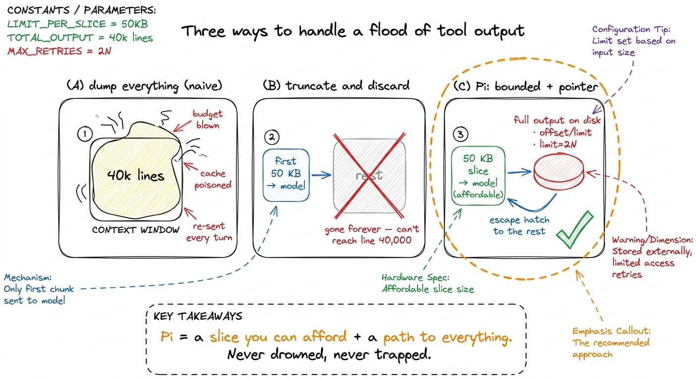

Does Pi serve the agent everything? (No, it truncates) DEEP
Ask a coding agent to run grep -r "foo" . on a large repo and the shell will happily hand back forty thousand matching lines. Ask it to cat a minified bundle and one physical line can be half a megabyte. So here is the question this chapter answers with real code: when a tool produces a flood, does Pi shovel the whole thing into the model's context, or does it bound it first? The answer is unambiguous. Pi bounds every tool. Nothing goes into context raw.
You already met the context window as the scarcest resource in the harness. Untruncated tool output is the single fastest way to burn it. A model with a 200k-token window can have half of it eaten by one careless find — and worse, it will pay to re-send that garbage on the next turn, and the turn after that, until compaction mercifully summarizes it away. Pi refuses to let that happen in the first place. Truncation is the cheap, upstream defense; compaction is the expensive downstream cleanup.
One rule, applied everywhere
The whole mechanism lives in two files: packages/coding-agent/src/core/tools/truncate.ts and output-accumulator.ts. The top of truncate.ts declares the constants that govern the entire toolbox:
export const DEFAULT_MAX_LINES = 2000;
export const DEFAULT_MAX_BYTES = 50 * 1024; // 50KB
export const GREP_MAX_LINE_LENGTH = 500; // Max chars per grep match lineThat is the universal rule, and it is worth memorizing: truncate at 2,000 lines OR 50 KB, whichever is hit first. A file of 2,000 short lines and a file of 40 giant lines both stop at the same cap, because either limit alone is enough to trigger it. No tool in Pi is allowed to hand the model an unbounded blob.1 The invariant lives in one shared module every tool imports, rather than being re-applied tool by tool — so it can't be forgotten when someone adds the twelfth tool.
But which end you keep is a real decision. truncate.ts exports two functions — truncateHead, which keeps the beginning and drops the rest, and truncateTail, which keeps the end and drops the front — and each tool chooses deliberately based on where the useful information lives.

figure rendering · The universal cap is one rule — 2,000 lines or 50 KB — but each tool pPer tool: same budget, different shape
The cap is uniform; the packaging around it is what makes each tool feel right to the model.
read (read.ts) truncates with truncateHead — when you open a file you want the top, not the bottom. Its default is the same 2,000 lines / 50 KB. But read doesn't just chop and shrug: it exposes offset and limit parameters so the model can page through a large file deliberately, and its description string tells the model exactly that — to "continue with offset until complete." So truncation here isn't lossy; it's paged. One special case is the pathological single line: if one line exceeds 50 KB, read refuses outright and suggests a sed -n 'Np' file | head -c 50KB incantation instead, because there is no honest way to give the model a useful slice of a half-megabyte line.2 This is a recurring shape in Pi's tools — instead of silently mangling input the tool can't handle, it fails loudly and tells the model the exact command that would work. The model reads the hint and adapts on the next turn. A refusal with a fix beats a corrupted success.
grep (grep.ts) caps at 100 matches by default — DEFAULT_LIMIT = 100, overridable via a limit parameter — or 50 KB, whichever comes first, and truncates each individual matching line to GREP_MAX_LINE_LENGTH (500 chars) so one enormous line can't dominate the result set. When it hits the cap it tells the model: "N matches limit reached. Use limit=2N for more, or refine pattern." That message is doing two jobs at once — it admits the result is partial, and it hands the model the two legitimate ways forward.
find (find.ts) caps at 1,000 results (DEFAULT_LIMIT = 1000). Filenames are cheap, so the ceiling is higher than grep's — but it is still a ceiling.

figure rendering · The four core tools and their caps: read keeps the head with offset pabash: the interesting one, because it streams
read, grep, and find have their full output in hand before they truncate — they know the total size. bash does not. A command streams bytes over time, and it might print 200 KB or 500 MB before it exits. If Pi buffered the whole stream in memory just to throw most of it away, a runaway command could exhaust the harness's own RAM. So bash (bash.ts + bash-executor.ts) is built on a purpose-made streaming component: OutputAccumulator in output-accumulator.ts.
OutputAccumulator keeps memory bounded no matter how much the command emits, and it does it with three ideas working together. It decodes UTF-8 incrementally as chunks arrive rather than waiting for the end. It keeps only a rolling tail in memory for the display snapshot — maxRollingBytes = maxBytes * 2 — discarding older bytes as new ones stream past, which is why bash naturally uses truncateTail: a command's answer (the exit summary, the last error, the final line of a build) almost always lives at the end. And crucially, once totalBytes or totalLines cross the cap, it lazily opens a temp file and streams the complete output to disk:
this.tempFilePath = defaultTempFilePath(this.tempFilePrefix); // /tmp/pi-output-<hex>.log
this.tempFileStream = createWriteStream(this.tempFilePath);So nothing is lost. The model receives a bounded 50 KB tail, and the tool result appends a pointer to the rest:
[Showing lines X-Y of TOTAL (50KB limit). Full output: /tmp/pi-output-3f9a1c.log]The model can then decide, on its own, to read that file — with offset and limit, back through the paged path — if it actually needs more. The full data exists on disk; only a slice ever touches context. This is the whole philosophy in one component: bounded by default, with a pointer to more.

figure rendering · bash never buffers the whole stream: OutputAccumulator decodes incremeWhy "bounded + a pointer" beats both extremes
There are two naive designs, and Pi rejects both. Dump everything blows the context budget, poisons the cache, and can crash the harness on a runaway command — the model drowns and pays to re-drown every turn. Silently truncate and discard is safer for the budget but lossy: the model asks for logs, gets the first 50 KB, and can never reach the error on line 40,000 that it actually needed. Pi's answer threads between them. Every tool gives the model a slice it can afford — 50 KB, 2,000 lines, 100 matches — and, in the same breath, a legitimate escape hatch to the rest: a temp-file path, offset/limit paging, or a limit=2N / refine-your-pattern hint. The model is never trapped with partial data and never buried under all of it.

figure rendering · Three strategies: dump everything (blows the budget), truncate-and-disHow Pi ships the discipline
The idea of "cap every tool's output" is easy to state; the engineering is in how a production harness ships it. Not as advice repeated in each tool, but as one shared module — truncate.ts plus the streaming OutputAccumulator — that the entire toolbox imports, with the head-vs-tail choice made per tool and an escape hatch attached to every truncation. That is what makes bounding a uniform, un-forgettable invariant of the whole system rather than something one tool can quietly skip.
So, to close the loop on the question we opened with: no, Pi does not serve the agent everything. It serves a deliberate, bounded slice — 2,000 lines or 50 KB, head or tail as the tool demands — and always leaves a marked trail to the rest. That single discipline is what keeps a hundred-turn Pi session from strangling on its own tool output. The next chapter follows the trail downstream, to what happens when even bounded output accumulates over a long session: compaction and summarization. For how truncation fits alongside Pi's other context mechanisms, see the Pi internals overview.